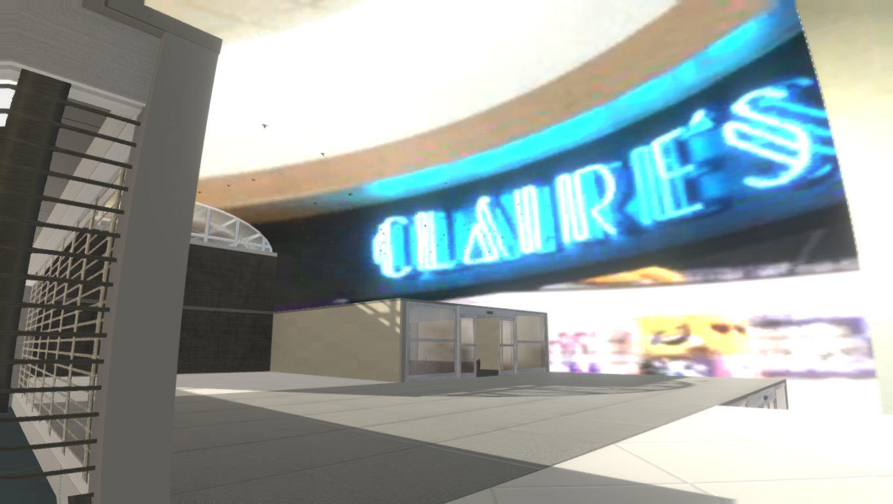
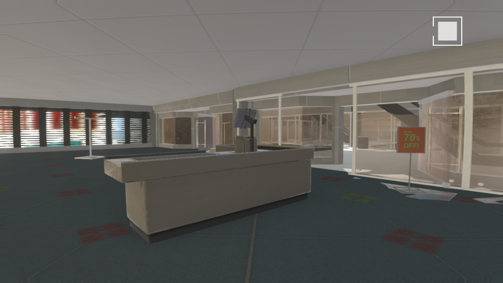
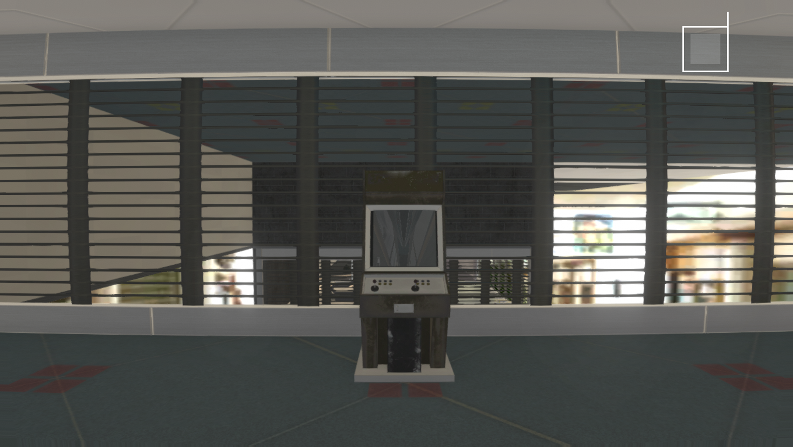
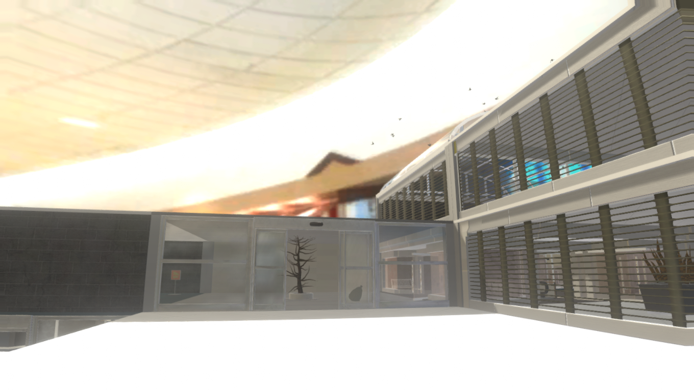
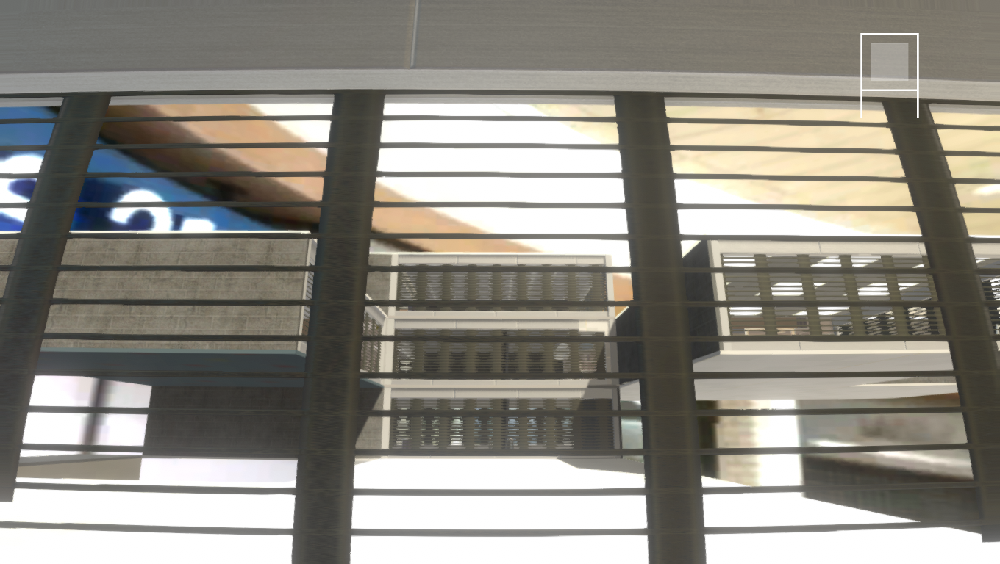
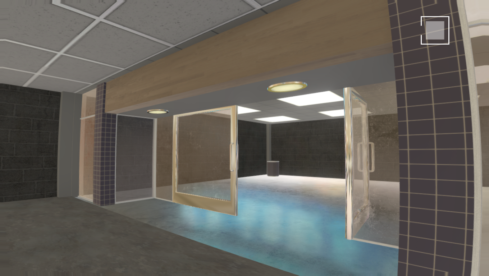

Recursion Plaza
Recursion Plaza is an interactive virtual environment made in the Unity game engine for PC and Mac.






Recursion Plaza is a procedurally generated dead shopping mall experience. In this
purgatory of capitalism's inextricable excesses and failings there is a dream of a kind of
vanished commons--a place we once browsed together before Schumpeter's gale drove us into
our homes and deeper into ourselves.
The cathedral carcass of a dead whale that fed your town for decades. You stroll the
promenade huffing fumes and recalling oilier times.
An eternal Sunday afternoon in Fall. Outside it's cold, but here under the skylight it's
warm and pretzel scented, and you can pretend you don't have school in the morning.
You can go deeper into the feeling or you can try to flee from it, but you will always be
where you are.
The soundtrack for this experience was created by
Dani Lee Pearce
This project was produced for the exhibition
Dire Jank at apexart, organized by
Porpentine Charity Heartscape
Technical support was provided by
Jeremy Rotzstain
and
Seanna Musgrave